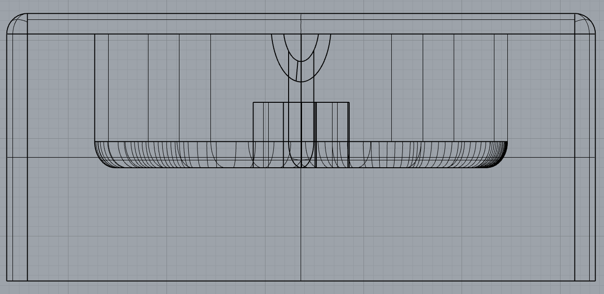
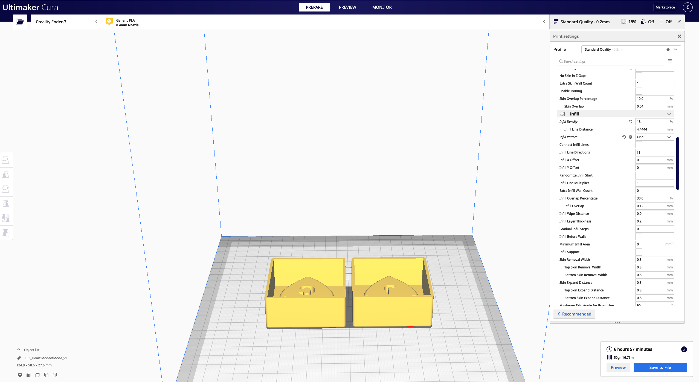

Background
I have a bunch of jewelry that I have been strugging to find a way to better organize them. There are lots of jewelry organizer you can buy online, but they are either not exactly the type I want. (e.g., have all the spots for all types of jewelry I have), or the ones I like are too expensive and I couldn't justify the cost. So I have been just keeping all of them in a bag, which is not ideal.
Problems:
- My necklaces always tangle together when kept all in one bag.
- To avoide things tangle together, I sometimes don't want to put them back in the bag after finish using it. This cause me not able to find my jewelries when next time want to use them.
- Putting them all separated in different bags is troublesome, so I end up not Putting them back in the bag again.
Requirements:
- An organizer that has a custom spot for all different type of jewelries I have.
- I can move it around easily.
- It will stay in place when I put them in a location.
- It's easy for me to take and put my jewelries back.
Sketches & Rendering


